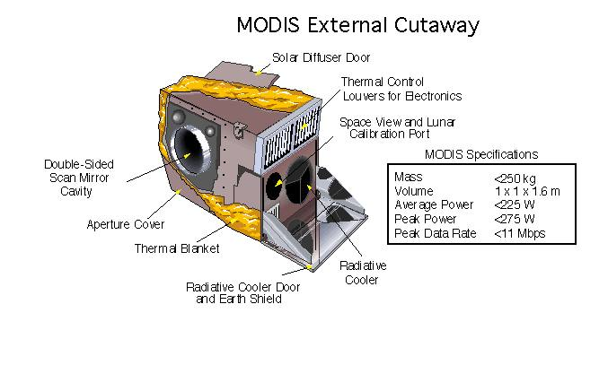
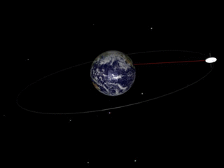
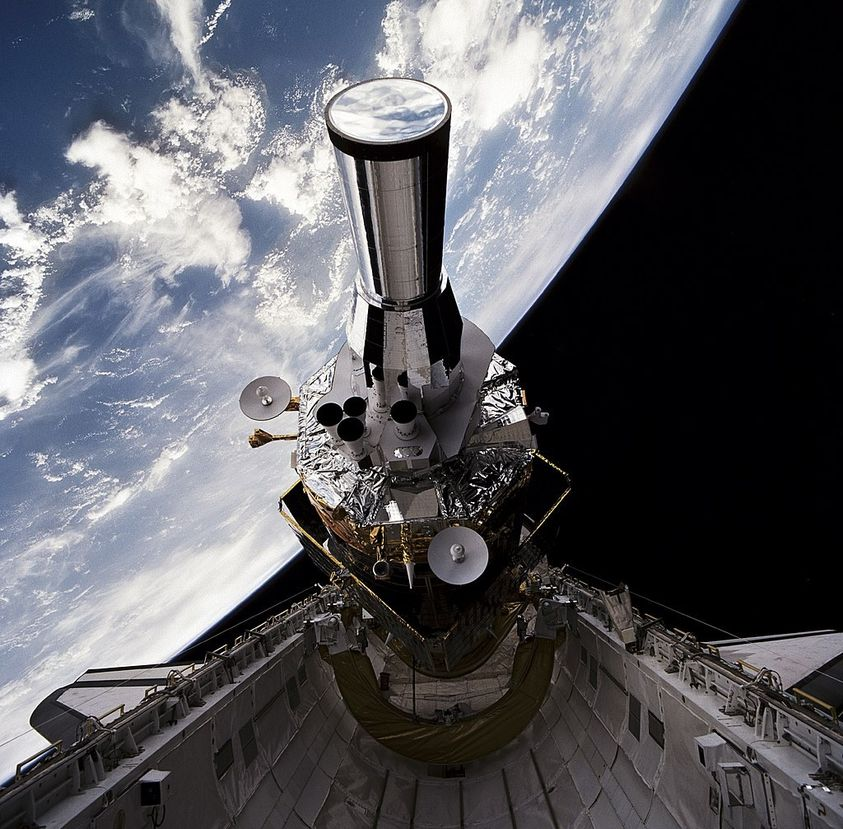
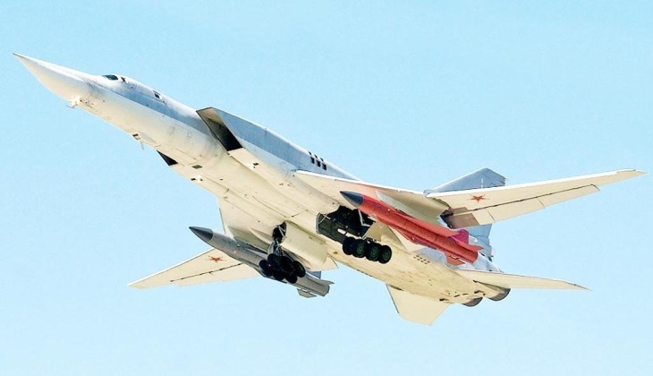
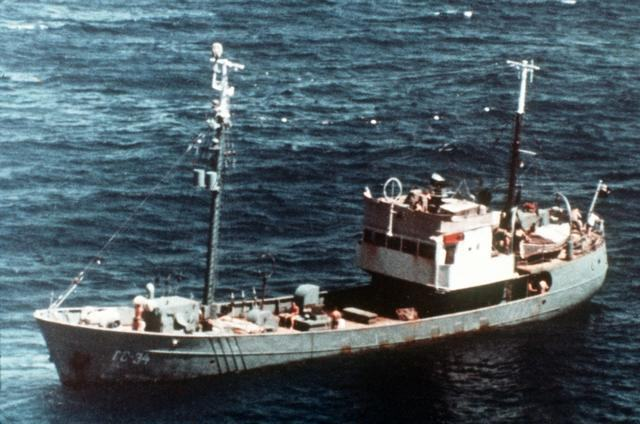
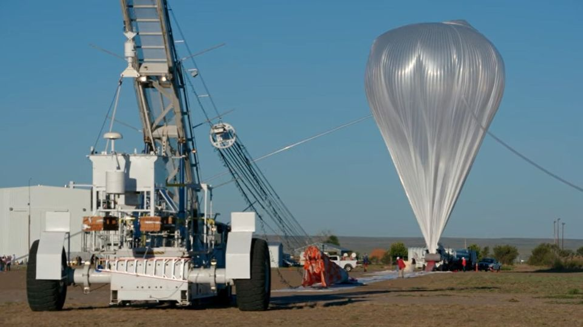
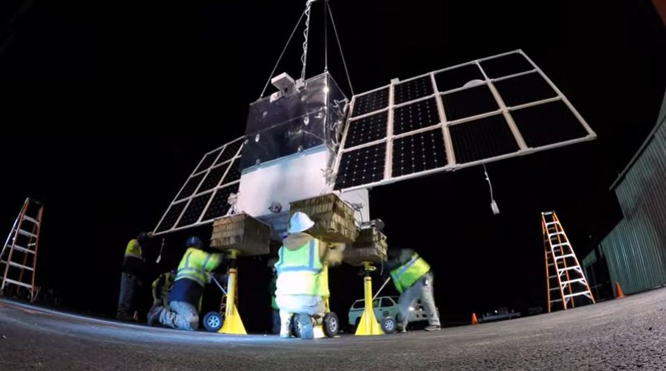

밀리터리 잡담 - 스파이 위성의 한계와 대안
게시: 2022-07-14T06:30:43+09:00
<왜 스파이 위성으로는 실시간 감시가 어려운가> 전기 문제 때문에라도 광학 이미지든 영상 레이더(SAR) 이미지든 위성 자체적으로 데이터 처리를 하지 못한다는 것이 실시간 감시 및 탐지에 있어 꽤 문제가 됨. 일단 인공위성은 꽤 많은 데이터를 캡춰함. 매일 수 테라바이트(TB)를 수집한다고. 문제는 이걸 지상 수퍼컴에서 분석하려면 일단 다운로드를 시켜줘야 하는데, 궤도에 떠있는 위성이라고 해도 항상 기지국과 고속통신이 되는 것이 아님. 민간 위성의 경우는 대개 자국 내의 기지국 상공을 지나갈 때 데이터를 다운로드 받음. 근데 보통 다운로드 받을 기지국 상공 범위를 지나가는 시간이 불과 십여분에 불과한 경우도 있다고. 그러니 10분 안에 (만약) 100 Mbps 속도로 다운로드를 받는다고 하면... 많아야 60GB 밖에 다운로드 받지 못함. 참고로 Moderate Resolution Imaging Spectroradiometer (MODIS) 위성의 경우 최대 대역폭이 11 Mbps 이하라고 (사진).

빠른 데이터 분석이 중요한 미군이야 전세계 곳곳의 기지에 위성 기지국을 두고 수시로 다운로드를 받을 수 있겠으나, 아무리 미군이라도 전세계 모든 곳, 가령 아프리카 대륙 한복판이나 러시아 한복판, 드넓은 태평양 모든 곳에 위성 기지국을 둘 수는 없음. 결국 어떤 위성이 어느 위치의 정보를 수집하느냐에 따라 다르지만, 데이터를 캡춰하는 순간부터 다운로드 받을 때까지 시간이 일부 걸릴 수 밖에 없음. 그리고 그렇게 수십 ~ 수백 GB의 raw data를 처리해서 사람이 볼 수 있는 이미지로 가동하는데만도 시간이 걸리고, 그걸 필요에 따라 보정을 한다든지 식별을 한다든지 하는 추가 가공 및 분석에는 더 시간이 걸림. <근데 쏘련 핵미사일 발사를 조기경보 해주는 스파이 위성은 뭔가?> Defense Support Program (DSP)이라는 프로그램에 소속된 스파이 위성들은 1960년대부터 발사되어 2000년대까지 계속 발사되었고, 지금도 궤도상에서 러시아나 중국의 ICBM 발사를 감시 중. ICBM은 마하 10이 넘는 속도로 날아가는데 그 발사를 조기 경보하려면 실시간 감시를 해야 할 것 아닌가? 실제로 DSP 위성들은 실시간 감시를 함. 대신 러시아와 중국을 24시간 감시하기 위해서 DSP 위성들은 지구의 자전 속도와 동일하게 공전하는 정지궤도(Geosynchronous orbit, 아래 사진1)에 위치함. 정지궤도는 (왜 그런 건지는 난 이해 못하겠는데) 35,786 km라는 무지하게 높은 고도임. 그러니 애초에 영상 레이더(SAR)나 광학 카메라 등으로 항공기나 선박 등을 감시할 수는 없고, 적외선 카메라로 오직 ICBM 발사와 핵폭발 등만을 감시함.

엄청난 고고도인 정지궤도의 장점도 있음. DSP 위성들은 주로 600km 이하의 저궤도상에 위치한 스파이 위성들과는 달리 drag 걱정없이 커다란 태양광 패널을 펼칠 수 있음. 그래서 전력량이 수백 watt에 불과한 스파이 위성들과는 달리 거의 1500 watt에 달하는 전력을 마음껏 쓸 수 있음. 그래서 온갖 잡스러운 적외선 신호들을 걷어내고 의미있는 ICBM 등의 중요 열원만 골라내는 signal processing이 위성 자체내에서 가능. 게다가 지구상의 기지국에 대해 항상 같은 위치에 떠 있으므로 하루 24시간 내내 거의 실시간으로 통신이 가능. 아래 사진은 1999년 우주왕복선 Atlantis에 실려 궤도에 올려지는 DSP-16 위성.

<그러면 대체 항모는 뭘로 찾으란 말인가> 미해군이야 항모를 감추려는 입장이고 항모를 찾으려는 측은 쏘련. 쏘련은 1970년대부터 레이더 위성과 신호정보 수집 위성 등을 이용하여 좀더 우아하게 미해군 항모를 찾으려 했으나 결과적으로 실패. 지금도 안정적으로 해상 목표물을 찾는 것은 무리인데 당시 기술이 충분히 발전되지도 않았었던 것이 가장 큰 문제. 냉전이 한창이던 시절, 스파이 위성이고 나발이고 쏘련 해군으로서는 아무튼 미해군 항모를 드넓은 대양에서 찾아내는 것이 1차 목표. 정확하게 그 위치만 찾아내면 Tu-22M Backfire 폭격기 (사진1)가 길고 굵은 대함 미쓸을 달고 날아갈 수 있었는데, 찾아낼 방법이 없었음. 가장 선호하는 것은 먼저 정찰기가 대양을 날아다니며 항모를 찾아낸 뒤 (격추 당하기 전에) 그 위치를 알려주는 것. 하지만 정찰기가 무작정 날아다니다가 항모전단을 마주치기엔 대서양과 태평양이 너무 넓었음.

그래서 실제로 마련된 (폼은 나지 않지만) 가장 현실적이고 확실한 방법은... 작은 어선이나 화물선으로 위장한 스파이 선박을 미 항모전단이 모항에서 출항하는 순간부터 졸졸 따라다니는 것 (사진2). 이런 눈가리고 아웅하는 스파이 선박을 미해군은 '고자질쟁이'(tattletale)라고 불렀음. 물론 이건 실전에서는 이런 스파이 선박은 당장 격침되므로 절대 쓸 수 없는 방법.

근데 역설적으로 이게 실전에서 가장 실용적인 방법. 어차피 전쟁이 벌어질 경우 미군이 쏘련군을 먼저 공격하기보다는 쏘련군이 미군을 선제 공격할 가능성이 매우 높았음. 즉, 스파이 선박의 유도를 받은 쏘련 폭격기가 미쓸을 발사하기 전까지는 아직 전쟁 상황이 아닐 것이므로, 미해군 항모는 앉아서 당하게 되어 있었음. 작은 스파이 선박 하나 희생시키고 항공모함을 잡는다면 완전 남는 장사. 물론 평상시 미해군 항모는 전체 중 1/3 정도만 바다에 나와 있을 것이므로 이런 식으로 부술 수 있는 미해군 항모는 최대로 해봐야 전체의 1/3. 그러나, 개전과 동시에 미해군 항모 전체의 1/3에 심각한 타격을 주고 시작한다면, 그야말로 꿈의 시나리오. 그냥 조국을 위해 목숨을 바칠 각오가 된 뱃사람들 몇 명과 낡은 배 몇 척이 성능이 의심쩍은 값비싼 스파이 위성보다 가성비는 물론 정확도 측면에서도 훠어어얼씬 좋은 정찰 자산이었음. <스파이 위성의 새로운 대안> 값비싼 스파이 위성 대신 풍선을 띄우는 것을 요즘 진지하게 고민 중이라고. COLD STAR (COvert Long Dwell STratospheric ARchitecture)라는 것은 헬륨으로 된 지름 약 30m 정도의 대형 풍선에 각종 센서와 통신 장비를 갖춘 정찰 기구 (사진1). 자체 전력 생산을 위해 위성처럼 태양광 패널까지 펼치고 (사진2), 고도는 물론 위성보다 훨씬 낮은 성층권 수준이고 대략 15~60km 사이를 오감.


이 기구의 장점은 싸고, 상대적으로 저고도라서 더 자세히 볼 수 있고, 그리고 정지 위치에서 감시한다는 것. 바람에 떠밀려다니는 기구 주제에 어떻게 정지 위치를 유지할까? 성층권에서는 고도마다 바람 방향이 제각각이라는 것을 이용하여, 만약 기구의 위치가 바뀌면 원래 위치로 돌아가기 위해 원하는 바람이 부는 고도까지 위아래로 오르락내리락 한다고 함. 그러기 위해서는 바람 방향을 감지할 수 있어야 하는데, 이를 위해 레이저 센서를 쓴다고 함. 놀랍게도 바람 방향에 따라 공기 중에 반사되는 미세한 레이저 반사파의 도플러(Doppler) 효과를 측정하여 바람 방향을 측정한다는 것.
현재로서는 적 함대를 찾아내거나 하는데 쓸 계획은 없고, 최근 실제로 배치되었던 것은 미국 사막지대에서 마약상들의 움직임을 추적하는데 활용. 위성과는 달리 대공 무기나 적 항공기에게 격추될 수 있는 것이 문제이므로 군용으로 쓰자면 적에게 들키질 말아야 하는데, 부피는 크지만 반사파가 작아서 레이더에는 새 정도의 크기로 보인다고. 다만 문제가... 구름 없는 밝은 낮에는 사람 눈에 반짝이는 점으로 보일 정도라는 것이 문제.